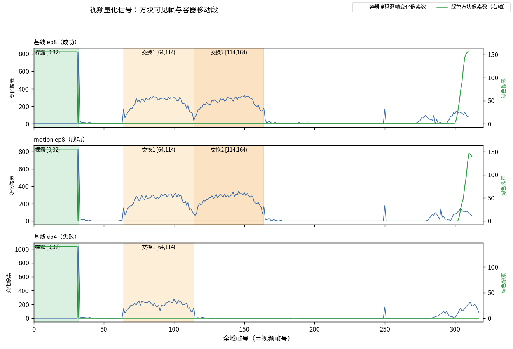
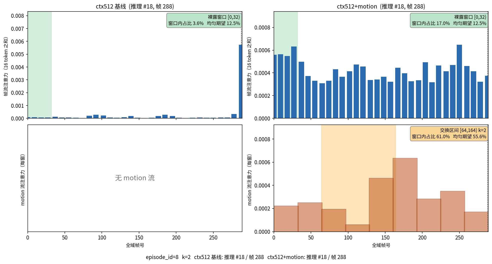
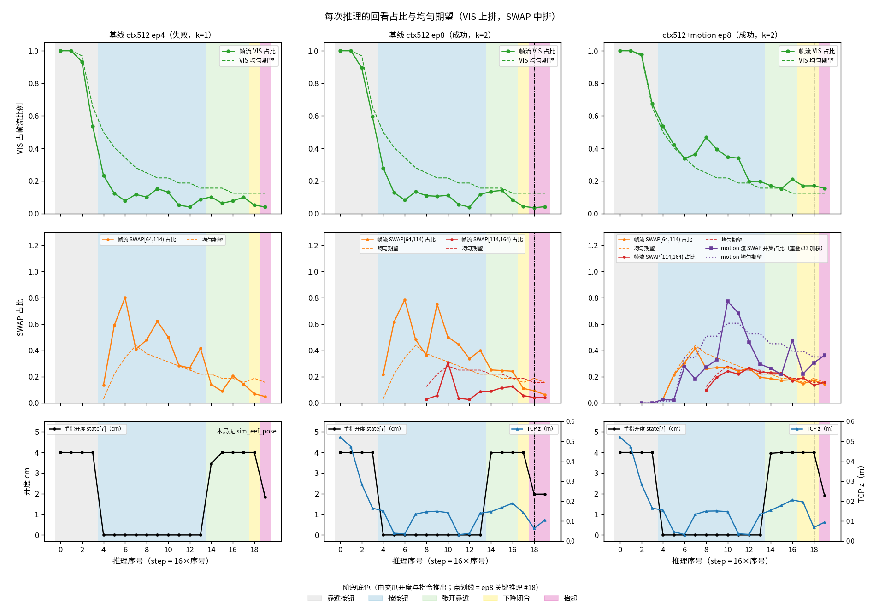
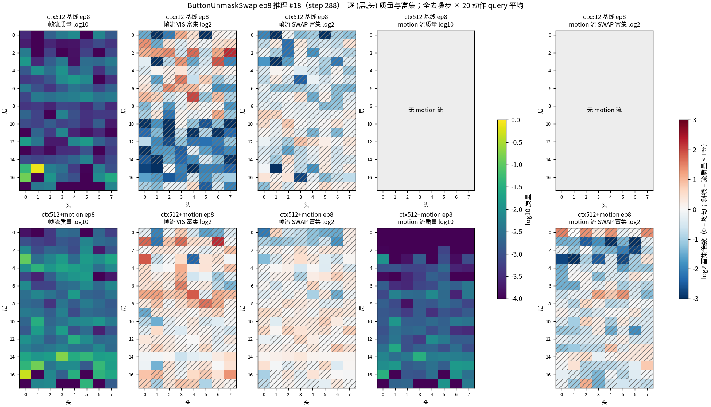
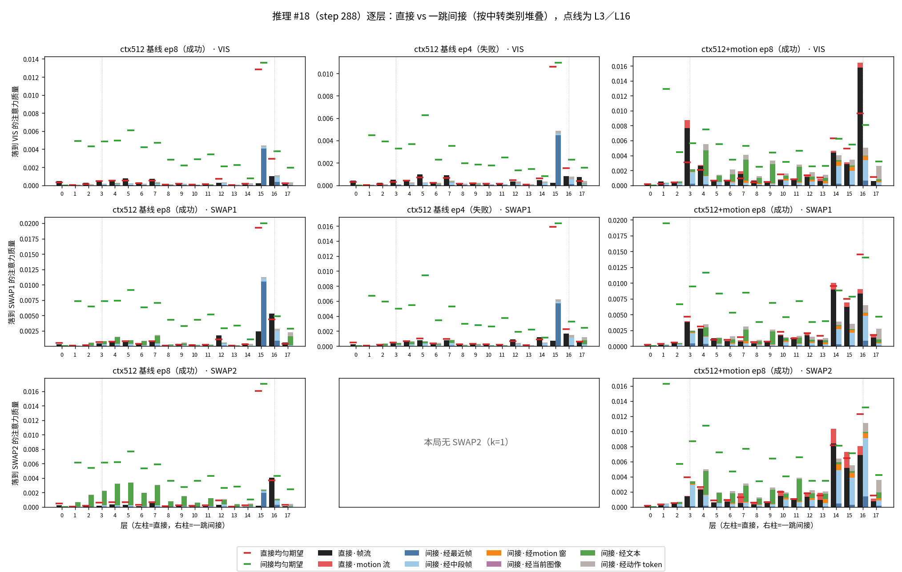
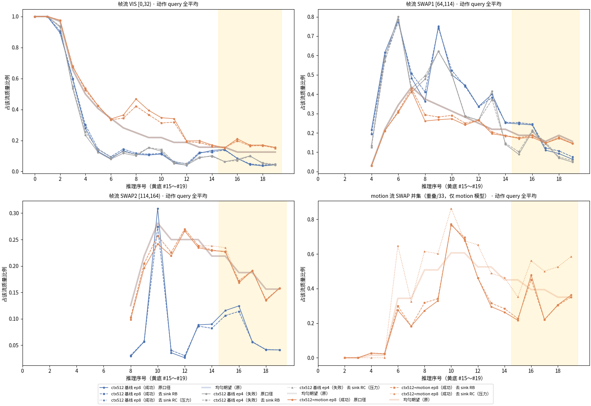
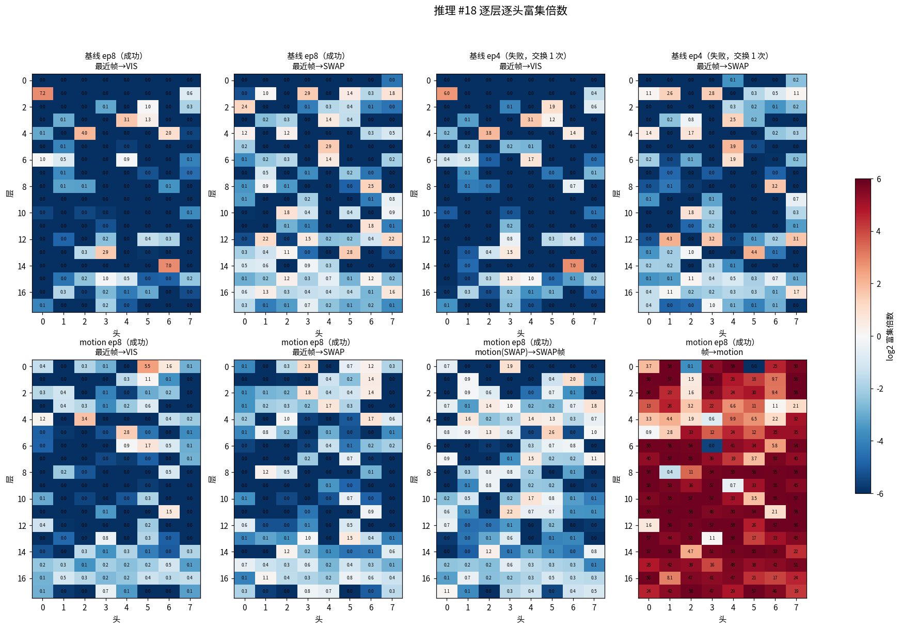
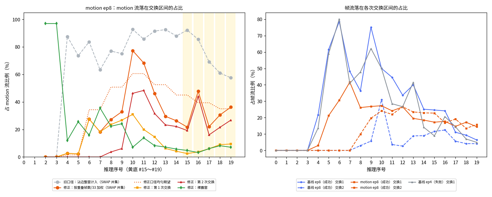
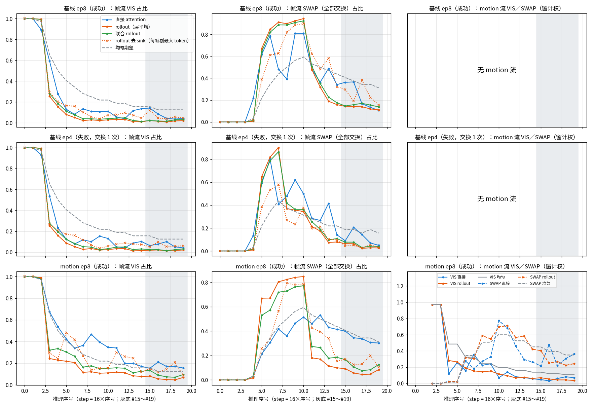

会，但要分情况。在 12 局上，motion 模型正常成功 11 局。把 motion 换成全 0 只剩 1 局，整体遮掉是 0 局，这两种几乎都跑到超时，差异明确（p≈0.002、0.001）。
换成相邻局的真实 motion 还有 8 局，比正常少 3 局，失败也是普通失败。12 局分辨不出这 3 局是真实影响还是扰动（p≈0.38）。所以 motion 输入不可缺已有证据，「本局 motion 的内容」是否重要还没有结论。
两个模型的注意力主体都在当前图像、文本和动作 token 上，记忆区只占约 1～3%。在这一小块里，基线几乎只看最近帧，落在方块裸露窗的占比低于均匀；motion 模型稳定地多看裸露窗（#18：17.0%，均匀 12.5%），去掉 sink 后仍成立。
motion 流没有稳定地盯交换过程。遮掉裸露窗或那两个最突出的头，成功局只少 2～3 局，不足以说明它们是任务所必需。
局从 10-31 官方评估（seed 42，每任务 50 局）里选：motion 模型在 ButtonUnmaskSwap 上成功的 12 局全部入选，两个模型跑同一批局。每种条件只改一处，其余代码、权重、seed 都不变。
| 模型 | 条件 | 成功 | 95% 区间 | 均推理 | 失/得 | p | 4 | 8 | 11 | 12 | 17 | 18 | 20 | 26 | 34 | 37 | 38 | 40 |
|---|---|---|---|---|---|---|---|---|---|---|---|---|---|---|---|---|---|---|
| 交换次数 | 1 | 2 | 3 | 1 | 1 | 2 | 2 | 1 | 1 | 2 | 1 | 2 | ||||||
| 目标色 | 绿 | 绿 | 蓝 | 红 | 绿 | 红 | 红 | 绿 | 蓝 | 绿 | 蓝 | 蓝 | ||||||
| 难度 | 易 | 易 | 难 | 易 | 易 | 中 | 易 | 中 | 中 | 易 | 中 | 易 | ||||||
| 基线 | 正常 | 4/12 | 10～65% | 24 | — | — | ✗ | ✓ | ✗ | ✓ | ✗ | ✓ | ✗ | ✗ | ✗ | ✗ | ✓ | ✗ |
| 基线 | 遮裸露窗 | 6/12 | 21～79% | 24 | −2 / +4 | 0.688 | ✓ | ✗ | ✓ | ✗ | ✗ | ✓ | ✓ | ✓ | ✗ | ✗ | ✓ | ✗ |
| 基线 | 遮 L14H6 | 5/12 | 15～72% | 24 | −3 / +4 | 1 | ✓ | ✗ | ✓ | ✗ | ✓ | ✓ | ✓ | ✗ | ✗ | ✗ | ✗ | ✗ |
| motion | 正常 | 11/12 | 62～100% | 23 | — | — | ✓ | ✓ | ✓ | ✓ | ✓ | ✓ | ✓ | ✗ | ✓ | ✓ | ✓ | ✓ |
| motion | 换成下一局的 motion | 8/12 | 35～90% | 23 | −4 / +1 | 0.375 | ✓ | ✓ | ✓ | ✓ | ✗ | ✓ | ✗ | ✓ | ✗ | ✓ | ✓ | ✗ |
| motion | 换成 0 | 1/12 | 0～38% | 77 | −10 / +0 | 0.002 | 超 | 超 | 超 | 超 | 超 | 超 | 超 | 超 | 超 | 超 | ✓ | 超 |
| motion | 遮全部 motion token | 0/12 | 0～26% | 82 | −11 / +0 | 0.001 | 超 | 超 | 超 | 超 | 超 | 超 | 超 | 超 | 超 | 超 | 超 | 超 |
| motion | 遮裸露窗 | 9/12 | 43～95% | 22 | −3 / +1 | 0.625 | ✓ | ✗ | ✓ | ✓ | ✗ | ✓ | ✓ | ✓ | ✓ | ✗ | ✓ | ✓ |
| motion | 遮 L3H0+L16H0 | 8/12 | 35～90% | 27 | −3 / +0 | 0.25 | ✓ | ✓ | ✓ | ✓ | 超 | ✓ | ✗ | ✗ | ✗ | ✓ | ✓ | ✓ |
不能用这张表比较两个模型的好坏。这 12 局是按 motion 模型成功挑的（50 局里全部 12 个成功局），对基线不公平，4/12 不是基线的真实成功率。同理，swap 的 8/12 也高于全部 50 局的 24%，可能只是这批局本身容易，并不能归功于换来的 motion。
ButtonUnmaskSwap 的指令形如「先按两个按钮，再拿起藏着绿色方块的容器」。方块只在开局短暂可见，随后容器盖住并交换位置。要选对容器，模型原则上要记住开局方块在哪，再跟踪交换。我们关注的就是下面这几段。
注意力分析用了 3 局：基线第 8 局（成功，交换 2 次）、基线第 4 局（失败，只交换 1 次）、motion 第 8 局（成功，交换 2 次）。每局 20 次推理，每 16 步一次，第 18 次（step 288）正好是抬起容器。
输入序列是「记忆区 + 当前 base 图 256 + 当前 wrist 图 256 + 文本 64」再接 20 个动作 token。基线记忆区 512 个 token，是 32 帧、每帧 16 个。motion 模型多 96 个 motion 槽（prefix 长度 1184 对 1088），每 33 帧一窗、每窗一个 token，和帧 token 交错排列。模型共 18 层、每层 8 头，每次推理去噪 10 步。

| 帧流 | 注意力落在记忆区历史帧 token 上的部分。 |
|---|---|
| motion 流 | 注意力落在 motion token 上的部分，基线没有这一路。 |
| 占比 | 先只看帧流（或 motion 流）内部，再算落在某区间的比例。分母本身很小，占比高不代表总注意力高。 |
| 均匀期望 | 如果平均分配，这个区间本该得到的比例。#18 时 32 帧中有 4 帧在裸露窗，期望就是 12.5%。高于它才算偏好。 |
| 富集倍数 | 实测除以均匀期望，1× 表示没有偏好。 |
| motion 窗计权 | 一窗盖 33 帧，只把与区间重叠的那部分算进去（重叠帧数 / 33）。 |
| sink | 不论内容、总是吃掉大量注意力的固定 token，这里主要是文本的 <bos>，会干扰「看哪里」的判断。 |
| rollout | 把各层注意力连乘，估计经中转 token 的间接读取。这是粗略近似，会过度平滑，也不含 MLP。 |
第 18 次推理，全部去噪步、层、头、动作 query 平均后的质量分布：
下面所有占比都是这一小块内部的相对比较。动作 query 平均还把 23～26% 给了 <bos>。

<bos> 重算后，#15～#19 从 17.2% 变为 16.8%（均匀 13.1%，1.28 倍）；再剔除 6 个 motion 窗的压力测试下仍有 16.5%。这是所有方向里最稳的正向信号。


基线第 4 局与第 8 局每头裸露窗超额的相关 r=0.996，前 10 头完全重合，L14H6 富集也几乎一样。唯一能看到的差别在张开靠近阶段（#14～17）：成功局仍让交换 1 高于均匀（1.24 倍），失败局降到 0.77 倍，抬起时差别消失。这只是一对局的观察，两局的交换次数还不同，不能当作成败原因。

<bos>，点线再剔除 6 个 motion 窗。帧流结论都没变；只有右下 motion 流的交换偏好对这一压力测试敏感。
第一版报给你的「motion 流落在交换区间 61.0%」和「靠近阶段 92%、85% 明显盯交换」不成立。原因是当时只要窗口与区间沾边就整窗计入，起点 160 的窗只有 4 帧在交换里，也被算满。
| 推理 | 旧口径（均匀） | 重叠 / 33（均匀） | 读法 |
|---|---|---|---|
| #15 | 92.2%（71.4） | 21.7%（45.0） | 低于均匀 |
| #16 | 85.5%（62.5） | 47.8%（39.4） | 高于均匀，集中在第 2 次交换 |
| #17 | 69.2%（62.5） | 22.1%（39.4） | 低于均匀 |
| #18 | 61.0%（55.6） | 30.5%（35.0） | 低于均匀 |
| #19 | 57.5%（55.6） | 36.2%（35.0） | 接近均匀 |
帧流口径不受影响。result.md 的一句话结论和评估总索引在这次提交里一并改为新口径。


要回答「本局 motion 内容重要吗」，现有 12 局不够。按优先级：
| 阶段 | 做了什么 | 产物 |
|---|---|---|
| 采集链 | 18 层手工展开捕获 attention，f32 语义闸通过（误差 1.19e-07、5.96e-08）；三局 60 次推理重跑动作逐位一致 | scripts/interpret/ |
| 第一阶段 | 基线第 4 局失败、第 8 局成功，motion 第 8 局成功；infra 尝试 npz=0，不计结局 | stage1/，4.9 GB |
| X1～X4 | 动作与文本注意力：层头、时间线、区间核实、词与空间 | analysis/x1～x4/ |
| R1～R4 | 存 prefix 全量注意力后：rollout、记忆区内部、sink、逐层通路 | stage1b/，26 GB；analysis/r1～r4/ |
| 因果 | S7 遮挡开关、S8 motion 内容替换，共 9 组 × 12 局，另加 1 组带记录重跑 | ablate12/，352G |
文档在 docs/evaluation-doc/attn-ctx512-vs-motion-1103/，本报告是其中的 report.html，细节见 result.md 与各 analysis/*/README.md。原始数据在本机 v1-store/evaluation/interpret-1103/，不进 git。
OFFICIAL_CTX_ASSET=PASS sha256=387d4bd5…8ae8 bytes=11574223742 files=17 LOCAL_ASSETS=PASS cc59999_files=38 cc59999_bytes=11976241540 encoder_sha256=27daa832 STAGE1_PAIR=PASS task=ButtonUnmaskSwap ep=8 ctx=success motion=success tries=2 SRC_EQ_5FCE5D3=PASS R3_SINK=PASS episodes=3 sinks=7 figs=5
和计划的出入。计划 1103-interpret-motion-attention-plan.html 只写了第一阶段和第二阶段；X、R 两轮分析和因果实验是你在对话中逐步加的，没有写回计划文件，也没有走计划一致性审查，实施中调整也只记到第一阶段。计划第二阶段（20 局规模）尚未开始。代码合并都经过了独立审查，图都渲染后目视复查过。